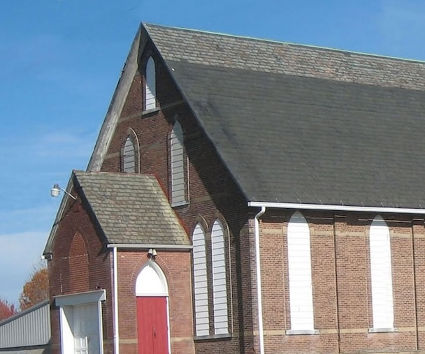

Baltzer Meyer Historical Society
Greensburg's Official Historical Society, dedicated to preserving the local heritage of Westmoreland County for tomorrow’s generation.

Greensburg's Official Historical Society, dedicated to preserving the local heritage of Westmoreland County for tomorrow’s generation.
